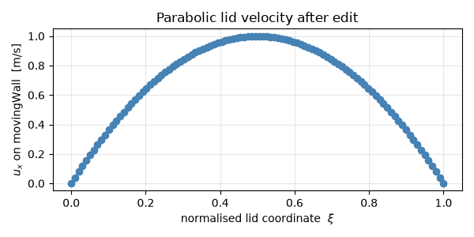

Note
Go to the end to download the full example code.
Modify a boundary condition value¶
For fixedValue-family patches (including noSlip,
inletOutlet), volume fields expose the patch’s stored value
buffer through the same __getitem__ interface used for the
internal field. np.asarray on the result is a zero-copy view, so
any in-place edit lands inside the patch field;
pybFoam.write() then serialises both the internal field and the
modified boundary back to 0/<field>.
This how-to changes the lid velocity of the cavity case from the
shipped uniform (1, 0, 0) to (2.5, 0, 0), and then to a
non-uniform parabolic profile.
Warning
The recipe does not safely modify zeroGradient,
mixed or calculated patches — see the Limitations
section at the bottom for the failure modes and the on-disk
workaround.
Prerequisite: finished Modify initial conditions of the cavity case.
Set up case + mesh¶
from pybFoam import Time, argList, clone_example, dictionary, fvMesh
from pybFoam.meshing import generate_blockmesh
case = clone_example("cavity")
time = Time(argList([str(case), "-case", str(case)]))
generate_blockmesh(time, dictionary.read(str(case / "system" / "blockMeshDict")))
mesh = fvMesh(time)
Inspect the patches¶
mesh.boundary() (the fvBoundaryMesh) lists every patch
that came out of the mesher. Names match what the field’s
boundaryField references.
patch faces
movingWall 100
fixedWalls 300
frontAndBack 0
Check the BC type before editing¶
Whether a NumPy edit on U["patchName"] will persist depends on
the underlying BC type — and pybFoam doesn’t currently bind a
boundary_type() accessor. The reliable workaround is to parse
0/U itself as an OpenFOAM dictionary and read the type
entry of each patch’s sub-dict.
from pybFoam import Word
SAFE_TO_EDIT = {"fixedValue", "noSlip", "inletOutlet", "movingWallVelocity"}
U_dict = dictionary.read(str(case / "0" / "U"))
bc_block = U_dict.subDict("boundaryField")
print(f"{'patch':<16s}{'BC type':<24s}{'edit via NumPy?'}")
for i in range(len(boundary)):
name = str(boundary[i].name())
if not bc_block.found(name):
continue
bc_type = str(bc_block.subDict(name).get[Word]("type"))
safe = "yes" if bc_type in SAFE_TO_EDIT else "NO — see Limitations"
print(f"{name:<16s}{bc_type:<24s}{safe}")
patch BC type edit via NumPy?
movingWall fixedValue yes
fixedWalls noSlip yes
frontAndBack empty NO — see Limitations
Read U and look at the lid patch¶
Indexing the field with a patch name returns the Field<vector> for
that patch; np.asarray is a zero-copy view. Because
movingWall is fixedValue, edits to that view land in the
stored patch buffer.
import numpy as np
from pybFoam import volVectorField
U = volVectorField.read_field(mesh, "U")
lid = np.asarray(U["movingWall"])
print(f"movingWall : shape={lid.shape} first row={lid[0]}")
movingWall : shape=(100, 3) first row=[1. 0. 0.]
Edit 1 — bump the uniform lid velocity¶
A uniform fixedValue patch carries one value per face. The
shipped IC has all faces at (1, 0, 0); we raise it to
(2.5, 0, 0).
after edit : first row=[2.5 0. 0. ] max u_x=2.500
Write the field back to disk¶
pybFoam.write() serialises both the internal field and every
patch field. We re-read the file to prove the change persisted.
from pybFoam import write
U.correctBoundaryConditions()
write(U)
# Confirm the modified value reached the on-disk file by grepping
# the rendered patch entry.
written = (case / "0" / "U").read_text()
moving_block_start = written.find("movingWall")
print(written[moving_block_start : moving_block_start + 150])
movingWall
{
type fixedValue;
value uniform (2.5 0 0);
}
fixedWalls
{
type noS
Edit 2 — non-uniform parabolic lid¶
A patch field is just a contiguous buffer, so any spatial profile
works. Use the patch face centres (mesh.boundaryMesh()[id].Cf()
is the OpenFOAM API; we approximate via per-face position from the
mesh) — for the unit-cavity setup we know the lid spans
x ∈ [0, L] and the entries are stored in face order. We give the
face index a normalised coordinate ξ ∈ [0, 1] and apply a
parabola that vanishes at the corners.
n_faces = lid.shape[0]
xi = np.linspace(0.0, 1.0, n_faces)
parabola = 4.0 * xi * (1.0 - xi) # 1 at midpoint, 0 at corners
lid[:, 0] = parabola # u_x ∈ [0, 1]
lid[:, 1] = 0.0
lid[:, 2] = 0.0
print(f"parabolic lid : u_x range = {lid[:, 0].min():.3f} … {lid[:, 0].max():.3f}")
U.correctBoundaryConditions()
write(U)
parabolic lid : u_x range = 0.000 … 1.000
Plot the lid profile¶
A 1-D matplotlib plot of u_x along the lid is the cheapest way
to verify the parabolic edit took effect.
import matplotlib.pyplot as plt
fig, ax = plt.subplots(figsize=(6, 3))
ax.plot(xi, np.asarray(U["movingWall"])[:, 0], "o-", color="steelblue")
ax.set_xlabel(r"normalised lid coordinate $\xi$")
ax.set_ylabel(r"$u_x$ on movingWall [m/s]")
ax.set_title("Parabolic lid velocity after edit")
ax.grid(alpha=0.3)
fig.tight_layout()
plt.show()

Limitations: which BC types tolerate NumPy edits¶
The recipe above works because np.asarray(U["patchName"]) hands
back a reference to boundaryFieldRef()[patchID] — the patch’s
visible value buffer. What that buffer represents depends on the
BC type:
fixedValue(and subclassesnoSlip,inletOutlet,movingWallVelocity, …) store the value field directly. In-place edits persist;correctBoundaryConditions()keeps them. ✓zeroGradientandcalculatedcarry no independent value storage — the buffer is an ephemeral cache that the BC’supdateCoeffs()overwrites with the extrapolated internal value on every evaluation. Edits are silently lost. ✗mixed(andslip,partialSlip,directionMixed) blend three storage fields —refValue,refGrad,valueFraction— into the visible value. None of those three are exposed to Python; editing the blend has no effect on the underlying components and is wiped on the nextevaluate(). ✗
Workaround for unsupported types. The on-disk 0/<field>
file is just an OpenFOAM dictionary, and dictionaries are fully
round-trippable from Python (see
Read, modify, and write OpenFOAM dictionaries). Edit the
patch’s value / refValue / valueFraction entries
there, then re-read the field. For example, to change a
zeroGradient outlet to a fixedValue of zero pressure:
field_dict = dictionary.read(str(case / "0" / "p"))
outlet = field_dict.subDict("boundaryField").subDict("outlet")
outlet.set("type", Word("fixedValue"))
outlet.set("value", scalarField([0.0])) # uniform 0
field_dict.write(str(case / "0" / "p"))
# then re-read the field for the new BC to take effect
Replacing a BC type at runtime through the existing in-memory
field (without going via disk) is not yet supported — it would
require binding fvPatchField<T>::New() and
boundaryFieldRef().set() (TODO in pybFoam_core).
%% See also ——–
Read, modify, and write OpenFOAM dictionaries — read and write any OpenFOAM dictionary, including the on-disk
boundaryFieldblock used by the workaround above.Modify initial conditions of the cavity case — modify the internal field (not the boundary).
Run the cavity case and post-process its time directories — run the cavity solver after editing the lid.
Total running time of the script: (0 minutes 0.235 seconds)